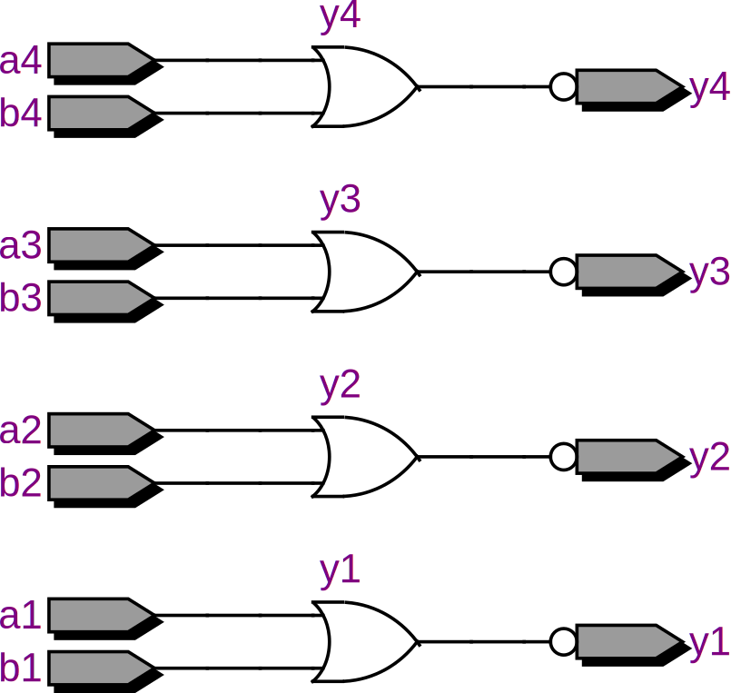

library ieee;
use ieee.std_logic_1164.all;
entity x7400 is
port (a1, b1, a2, b2, a3, b3, a4, b4: in std_logic; y1, y2, y3, y4: out std_logic);
end entity;
architecture behavior of x7400 is
begin
y1 <= not (a1 and b1);
y2 <= not (a2 and b2);
y3 <= not (a3 and b3);
y4 <= not (a4 and b4);
end architecture;
7402
library ieee;
use ieee.std_logic_1164.all;
entity ti7402 is
port (a1, b1, a2, b2, a3, b3, a4, b4: in std_logic; y1, y2, y3, y4: out std_logic);
end entity;
architecture behavior of ti7402 is
begin
y1 <= not (a1 or b1);
y2 <= not (a2 or b2);
y3 <= not (a3 or b3);
y4 <= not (a4 or b4);
end architecture;

7483
library ieee;
use ieee.std_logic_1164.all;
use ieee.numeric_std.all;
entity ti7483 is
port(
c0: in std_logic;
c4: out std_logic;
a, b: in unsigned(3 downto 0);
s: out unsigned(3 downto 0));
end entity;
architecture behavior of ti7483 is
signal tmp: unsigned(5 downto 0);
begin
tmp <= ('0' & a & '1') + ('0' & b & c0);
s <= tmp(4 downto 1);
c4 <= tmp(5);
end architecture;
74133
library ieee;
use ieee.std_logic_1164.all;
entity ti74133 is
port (a: in std_logic_vector(12 downto 0); y: out std_logic);
end entity;
architecture behavior of ti74133 is
begin
y <= not (a(0) and a(1) and a(2) and a(3) and a(4) and a(5) and a(6) and a(7) and
a(8) and a(9) and a(10) and a(11) and a(12));
end architecture;
74139
library ieee;
use ieee.std_logic_1164.all;
entity ti74139 is
port(
en0_n, en1_n: in std_logic;
sel0, sel1: in std_logic_vector(1 downto 0);
y0, y1: out std_logic_vector(3 downto 0));
end entity ti74139;
architecture behavior of ti74139 is
signal tmp0, tmp1: std_logic_vector(3 downto 0);
begin
y0 <= "1111" when en0_n='1' else tmp0;
y1 <= "1111" when en1_n='1' else tmp1;
process (sel0)
begin
case sel0 is
when "00" => tmp0 <= "1110";
when "01" => tmp0 <= "1101";
when "10" => tmp0 <= "1011";
when "11" => tmp0 <= "0111";
end case;
end process;
process (sel1)
begin
case sel1 is
when "00" => tmp1 <= "1110";
when "01" => tmp1 <= "1101";
when "10" => tmp1 <= "1011";
when "11" => tmp1 <= "0111";
end case;
end process;
end architecture behavior;
74150
library ieee;
use ieee.std_logic_1164.all;
entity ti74150 is
port (
g_n: in std_logic;
e: in std_logic_vector(15 downto 0);
sel: in std_logic_vector(3 downto 0);
w_n: out std_logic);
end entity;
architecture behavior of ti74150 is
signal tmp: std_logic;
begin
process (e)
begin
case sel is
when "0000" => tmp <= e(0);
when "0001" => tmp <= e(1);
when "0010" => tmp <= e(2);
when "0011" => tmp <= e(3);
when "0100" => tmp <= e(4);
when "0101" => tmp <= e(5);
when "0110" => tmp <= e(6);
when "0111" => tmp <= e(7);
when "1000" => tmp <= e(8);
when "1001" => tmp <= e(9);
when "1010" => tmp <= e(10);
when "1011" => tmp <= e(11);
when "1100" => tmp <= e(12);
when "1101" => tmp <= e(13);
when "1110" => tmp <= e(14);
when "1111" => tmp <= e(15);
end case;
end process;
w_n <= g_n or not tmp;
end architecture;
library ieee;
use ieee.std_logic_1164.all;
entity ti74151 is
port (g_n: in std_logic;
e: in std_logic_vector(7 downto 0);
sel: in std_logic_vector(2 downto 0);
w_n, y: out std_logic);
end entity;
architecture behavior of ti74151 is
signal tmp, tmp2: std_logic;
begin
process (e)
begin
case sel is
when "000" => tmp <= e(0);
when "001" => tmp <= e(1);
when "010" => tmp <= e(2);
when "011" => tmp <= e(3);
when "100" => tmp <= e(4);
when "101" => tmp <= e(5);
when "110" => tmp <= e(6);
when "111" => tmp <= e(7);
end case;
end process;
tmp2 <= g_n or not tmp;
w_n <= tmp2;
y <= not tmp2;
end architecture;